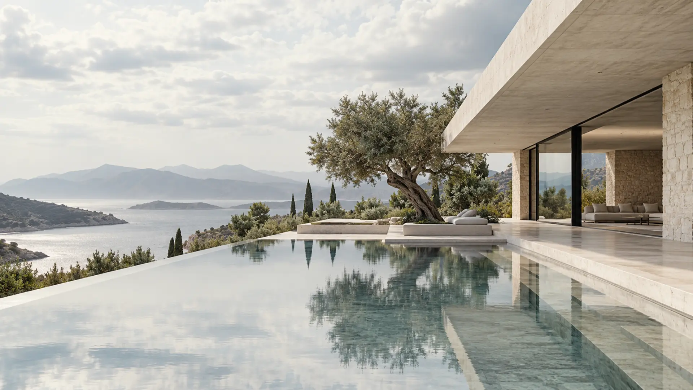
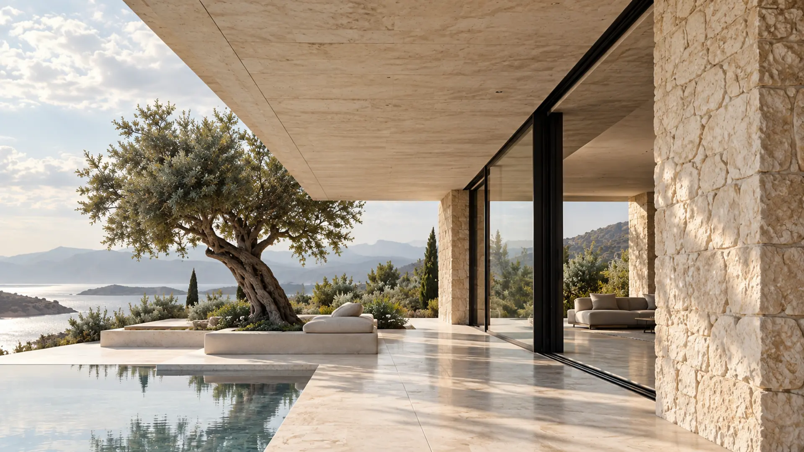
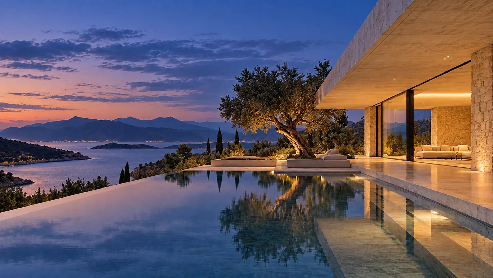

ARCHITECTURE IN CONTEXT
A place
to belong.
We explore the relationship between a building and everything that surrounds it.
Discover the Horizon House
How can a home
meet the horizon
without dominating it?
Instead of beginning with a signature shape, this study starts with a relationship: the land, the water and the way people move between shelter and open air.
The decisions
behind the form.


A line drawn
from the horizon.
The continuous roof holds the composition together. Its quiet horizontal gesture allows the surrounding land and distant water to remain the focus.
THE SAME BUILDING, A DIFFERENT HOUR
Light changes.
The architecture stays.
Move between daylight and dusk to see how material, transparency and the relationship between inside and outside transform over time.
Nothing added
without reason.
Limestone absorbs the warmth of the landscape. Glass dissolves the edge between living room and terrace. A single olive tree makes the passage of time visible.
Different spaces.
One point of view.
Every project begins with a different condition. The work is not about repeating a visual signature, but making the essential visible.
We don't start
with an image.
We start with a question.
An architectural portfolio can do more than display finished forms. It can reveal the thinking that makes those forms meaningful.
LET'S TALK ABOUT YOUR PROJECT ↗Every place
has a story.
This is a fictional architectural portfolio created as a design and interaction study by POYARA. The imagery and project narratives are conceptual.
Explore POYARA ↗